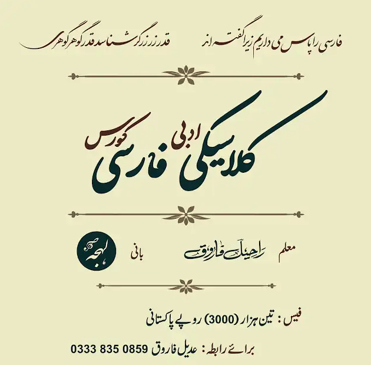

کلاسیکی فارسی کورس

راحیل فاروق صاحب کی جانب سے ترتیب کیا گیا کورس
:ضمائر
| وضاحت و تفصیل |
اردو میں ضمیر
|
ضمیر |
| (واؤ مجہول: اردو کے جو، کو، دو کی طرح کی آواز): (واحد غائب) |
وہ |
او |
| (یائے مجہول: اےشان): (جمع غائب) |
وہ |
ایشان |
| (واؤ مجہول: اردو کے جو، کو، دو کی طرح کی آواز): (واحد حاضر) |
تو |
تو |
| (جمع حاضر) |
تم یا آپ |
شُما |
| (واحد متکلم) |
میں |
مَن |
| (جمع متکلم) |
ہم |
ما |
:ضمائر کی آخر میں آنے والی صورتیں
| وضاحت و تفصیل |
لاحقہ |
ضمیر |
| ن حذف کر دی جائے گی |
|
او |
| وہ (جمع) ، انہوں |
۔(ا)ند
|
ایشان |
| تو (واحد) |
۔(ا)ند
|
تو |
| (جمع)تم |
۔(ا)ید
|
شُما |
|
۔(ا)م
|
مَن |
|
۔(ا)یم
|
ما |
کردن سے ماضی مطلق کی صورتیں
| وضاحت و تفصیل |
گردان
|
ضمیر |
| اس نے کیا |
کرد |
او |
| انہوں نے کیا |
کردند |
ایشان |
| تو نے کیا |
کردی |
تو |
| تم نے کیا |
کردید |
شُما |
| میں نے کیا |
کردم |
مَن |
| ہم نے کیا |
کردیم |
ما |
گفتن سے ماضی مطلق کی صورتیں
| وضاحت و تفصیل |
گردان
|
ضمیر |
| اس نے کہا |
گفت |
او |
| انہوں نے کہا |
گفتند |
ایشان |
| تو نے کہا |
گفتی |
تو |
| تم نے کہا |
گفتید |
شُما |
| میں نے کہا |
گفتم |
مَن |
| ہم نے کہا |
گفتیم |
ما |
مشق
| ما |
من |
شما |
تو |
ایشان |
او |
اردو معنی |
مصدر |
| A |
B |
C |
D |
E |
خورد |
کھانا |
خوردن |
| A |
B |
C |
D |
E |
نوشید |
پینا |
نوشیدن |
| A |
B |
C |
D |
E |
داد |
دینا |
دادن |
| A |
B |
C |
D |
E |
گرفت |
لینا، پکڑنا |
گرفتن |
| A |
B |
C |
D |
E |
نشست |
بیٹھنا |
نشستن |
| A |
B |
C |
D |
E |
برخاست |
اٹھنا |
برخاستن |
| A |
B |
C |
D |
E |
دید |
دیکھنا |
دیدن |
| A |
B |
C |
D |
E |
شنید |
سننا |
شنیدن |